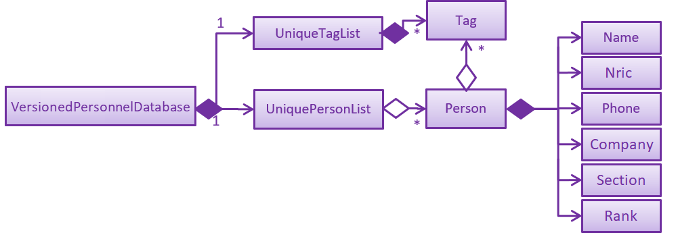

By: CS2103 W15-4 Since: Jun 2016 Licence: MIT
- 1. Setting up
- 2. Design
- 3. Implementation
- 4. Documentation
- 5. Testing
- 6. Dev Ops
- Appendix A: Suggested Programming Tasks to Get Started
- Appendix B: Product Scope
- Appendix C: User Stories
- Appendix D: Use Cases
- Appendix E: Non Functional Requirements
- Appendix F: Glossary
- Appendix G: Product Survey
- Appendix H: Instructions for Manual Testing
1. Setting up
1.1. Prerequisites
-
JDK
9or laterJDK 10on Windows will fail to run tests in headless mode due to a JavaFX bug. Windows developers are highly recommended to use JDK9. -
IntelliJ IDE
IntelliJ by default has Gradle and JavaFx plugins installed.
Do not disable them. If you have disabled them, go toFile>Settings>Pluginsto re-enable them.
1.2. Setting up the project in your computer
-
Fork this repo, and clone the fork to your computer
-
Open IntelliJ (if you are not in the welcome screen, click
File>Close Projectto close the existing project dialog first) -
Set up the correct JDK version for Gradle
-
Click
Configure>Project Defaults>Project Structure -
Click
New…and find the directory of the JDK
-
-
Click
Import Project -
Locate the
build.gradlefile and select it. ClickOK -
Click
Open as Project -
Click
OKto accept the default settings -
Open a console and run the command
gradlew processResources(Mac/Linux:./gradlew processResources). It should finish with theBUILD SUCCESSFULmessage.
This will generate all resources required by the application and tests. -
Open
MainWindow.javaand check for any code errors-
Due to an ongoing issue with some of the newer versions of IntelliJ, code errors may be detected even if the project can be built and run successfully
-
To resolve this, place your cursor over any of the code section highlighted in red. Press ALT+ENTER, and select
Add '--add-modules=…' to module compiler optionsfor each error
-
-
Repeat this for the test folder as well (e.g. check
HelpWindowTest.javafor code errors, and if so, resolve it the same way)
1.3. Verifying the setup
-
Run the
seedu.address.MainAppand try a few commands -
Run the tests to ensure they all pass.
1.4. Configurations to do before writing code
1.4.1. Configuring the coding style
This project follows oss-generic coding standards. IntelliJ’s default style is mostly compliant with ours but it uses a different import order from ours. To rectify,
-
Go to
File>Settings…(Windows/Linux), orIntelliJ IDEA>Preferences…(macOS) -
Select
Editor>Code Style>Java -
Click on the
Importstab to set the order-
For
Class count to use import with '*'andNames count to use static import with '*': Set to999to prevent IntelliJ from contracting the import statements -
For
Import Layout: The order isimport static all other imports,import java.*,import javax.*,import org.*,import com.*,import all other imports. Add a<blank line>between eachimport
-
Optionally, you can follow the UsingCheckstyle.adoc document to configure Intellij to check style-compliance as you write code.
1.4.2. Updating documentation to match your fork
After forking the repo, the documentation will still have the SE-EDU branding and refer to the se-edu/addressbook-level4 repo.
If you plan to develop this fork as a separate product (i.e. instead of contributing to se-edu/addressbook-level4), you should do the following:
-
Configure the site-wide documentation settings in
build.gradle, such as thesite-name, to suit your own project. -
Replace the URL in the attribute
repoURLinDeveloperGuide.adocandUserGuide.adocwith the URL of your fork.
1.4.3. Setting up CI
Set up Travis to perform Continuous Integration (CI) for your fork. See UsingTravis.adoc to learn how to set it up.
After setting up Travis, you can optionally set up coverage reporting for your team fork (see UsingCoveralls.adoc).
| Coverage reporting could be useful for a team repository that hosts the final version but it is not that useful for your personal fork. |
Optionally, you can set up AppVeyor as a second CI (see UsingAppVeyor.adoc).
| Having both Travis and AppVeyor ensures your App works on both Unix-based platforms and Windows-based platforms (Travis is Unix-based and AppVeyor is Windows-based) |
1.4.4. Getting started with coding
When you are ready to start coding,
-
Get some sense of the overall design by reading Section 2.1, “Architecture”.
-
Take a look at Appendix A, Suggested Programming Tasks to Get Started.
2. Design
2.1. Architecture

The Architecture Diagram given above explains the high-level design of the App. Given below is a quick overview of each component.
The .pptx files used to create diagrams in this document can be found in the diagrams folder. To update a diagram, modify the diagram in the pptx file, select the objects of the diagram, and choose Save as picture.
|
Main has only one class called MainApp. It is responsible for,
-
At app launch: Initializes the components in the correct sequence, and connects them up with each other.
-
At shut down: Shuts down the components and invokes cleanup method where necessary.
Commons represents a collection of classes used by multiple other components.
The following class plays an important role at the architecture level:
-
LogsCenter: Used by many classes to write log messages to the App’s log file.
The rest of the App consists of four components.
Each of the four components
-
Defines its API in an
interfacewith the same name as the Component. -
Exposes its functionality using a
{Component Name}Managerclass.
For example, the Logic component (see the class diagram given below) defines it’s API in the Logic.java interface and exposes its functionality using the LogicManager.java class.
How the architecture components interact with each other
The Sequence Diagram below shows how the components interact with each other for the scenario where the user issues the command delete 1.

delete 1 commandThe sections below give more details of each component.
2.2. UI component
API : Ui.java
The UI consists of a MainWindow that is made up of parts e.g.CommandBox, ResultDisplay, PersonListPanel, StatusBarFooter, BrowserPanel etc. All these, including the MainWindow, inherit from the abstract UiPart class.
The UI component uses JavaFx UI framework. The layout of these UI parts are defined in matching .fxml files that are in the src/main/resources/view folder. For example, the layout of the MainWindow is specified in MainWindow.fxml
The UI component,
-
Executes user commands using the
Logiccomponent. -
Listens for changes to
Modeldata so that the UI can be updated with the modified data.
2.3. Logic component
API :
Logic.java
-
Logicuses theAddressBookParserclass to parse the user command. -
This results in a
Commandobject which is executed by theLogicManager. -
The command execution can affect the
Model(e.g. adding a person). -
The result of the command execution is encapsulated as a
CommandResultobject which is passed back to theUi. -
In addition, the
CommandResultobject can also instruct theUito perform certain actions, such as displaying help to the user.
Given below is the Sequence Diagram for interactions within the Logic component for the execute("delete 1") API call.
delete 1 Command2.4. Model component

API : Model.java
The Model,
-
stores a
UserPrefobject that represents the user’s preferences. -
stores the Duty Personnel data.
-
stores the implementation of the Calendar and DutyDates.
-
stores the implementation of a Duty Personnel.
-
exposes an unmodifiable
ObservableList<Person>that can be 'observed' e.g. the UI can be bound to this list so that the UI automatically updates when the data in the list change. -
does not depend on any of the other three components.
As a more OOP model, we can store a Tag list in Personnel Database, which Person can reference. This would allow Personnel Database to only require one Tag object per unique Tag, instead of each Person needing their own Tag object. An example of how such a model may look like is given below. |
2.5. Storage component
API : Storage.java
The Storage component,
-
can save
UserPrefobjects in json format and read it back. -
can save the Personnel Database data in json format and read it back.
2.6. Common classes
Classes used by multiple components are in the seedu.addressbook.commons package.
3. Implementation
This section describes some noteworthy details on how certain features are implemented.
3.1. Block Dates Feature
3.1.1. Current Implementation
The block dates feature is facilitated by PersonnelDatabase and was implemented for general users as they cannot be expected to do duties any time during the upcoming month. They may have certain dates that are busy or do not wish to do duties and as such they can block the dates in the PersonnelDatabase.
Block Dates was done by adding 3 new commands to the Logic which are BlockDateCommand, ViewBlockCommand, RemoveBlockCommand.
Modifications and methods were also added in Model and Storage to implement the blocking of dates in Duty planning and storage.
BlockDateCommand works like other commands in the Duty Planner. The command is read a text string from the MainWindow in UI.
The sequence diagram for the interaction is below.
Step 1 :
As seen in the diagram above. The MainWindow calls the execute Command in Logic and passes in the command text, userName and userType of the logged in user.
Step 2 :
The LogicManager then passes the command text, userName and userType to PersonnelDatabaseParser and it determines the type of command by parsing the String input.
Using certain command words, the PersonnelDatabase Parser determines what the command is and then passes the parsed commandText, userName and userType to the BlockDateCommandParser.
Step 3 :
The BlockDateCommandParser takes in the dates list as a String and parses it into a Integer List which is used in the model.
The BlockDateCommandParser then passes in the Integer List, userType and userName to BlockDateCommand.
It checks for valid Integer inputs for days in the next month and will throw an exception if the dates entered are not valid
Step 4 :
The logic for BlockDateCommand follows the activity diagram below.
Step 5 :
The BlockDateCommand then passes the Integer List to the model where it is stored in a Hashmap in DutyMonth.
DutyMonth has a Hashmap<Person, List<Integer>> blockedDays object to allow it to store the blockedDays of every person for the upcoming month.
Step 6 :
The algorithm for scheduling was then modified to prevent the user from not doing duties on their blockedDays. This was done with the assistance of the HashMap.
During scheduling when a person is assigned to a day the model checks the list of blocked dates. If the person has a blocked day on the assigned duty, they are assigned a new one.
Someone else will then replace them in the previously assigned duty.
A more detailed explanation of the scheduling algorithm is in Section 3.5.6, “Duty Settings”.
3.1.2. Additional Commands
Commands viewblock and removeblock` were added for the users convenience. This helps the users to find and modify the Blocked Dates for the upcoming Month.
These two commands access the HashMap in the Model associated with blockedDates and either view or remove the blockedDates for the current user.
The Hashmap uses a Person object as a key. The logged in user’s NRIC is used to obtain the current User person object and that is used as the key to retrieve the information from the Hashmap.
All this is done through the model with methods such as getBlockedDates and `removeBlockedDays respectively for view and remove.
These two commands complete the suite of blocking which allows users to experience more flexibility in their duty planning.
3.1.3. Design Considerations:
-
Alternative 1 (current implementation): BlockDateCommand takes in a few dates they are then stored in the personnel database as a Hashmap.
-
Pros :
-
Easy to implement as a new Command. Parsers have already been set up in address book and adding a new command is relatively easy to implement. *The command storing the Integer List in the PersonnelDatabase in a HashMap is also convenient for the other commands such as
viewblockand `removeblock. *The Hashmap allows easy referencing for these commands. The Hashmap also allows for easier scheduling when the scheduler is run.
-
-
Cons :
-
The BlockDateCommand would directly modify the HashMap in the PersonnelDatabase and this would go against the n-tier architecture of the PersonnelDatabase Program. This would break the abstraction principle
-
-
Implemented Fix for Cons :
-
To combat the above issue, Model was given methods to add the blockedDates into the Personnel Database rather than the command itself. This allows the logic to pass the dates to the model which would then integrate it into the Personnel Database.
-
-
-
Alternative 2 (current implementation): BlockDateCommand takes in a few dates they are then stored as a new Class called BlockedDates
-
Pros :
-
Easy to implement as a new Command. Parsers have already been set up in address book and adding a new command is relatively easy to implement.
-
Would be clear what the BlockedDate Class does and also if other forms of dates such as AppointmentDates have to be added in later this would help with integrating them.
-
-
Cons :
-
The implementation of a BlockedDate Class would complicated the process of integrating into the schedule much harder. Implementing the BlockedDate into the algorithm would be a lot harder and would take more time and effort.
-
-
3.2. Undo/Redo feature
3.2.1. Current Implementation
The undo/redo mechanism is facilitated by VersionedAddressBook.
It extends AddressBook with an undo/redo history, stored internally as an addressBookStateList and currentStatePointer.
Additionally, it implements the following operations:
-
VersionedAddressBook#commit()— Saves the current address book state in its history. -
VersionedAddressBook#undo()— Restores the previous address book state from its history. -
VersionedAddressBook#redo()— Restores a previously undone address book state from its history.
These operations are exposed in the Model interface as Model#commitAddressBook(), Model#undoAddressBook() and Model#redoAddressBook() respectively.
Given below is an example usage scenario and how the undo/redo mechanism behaves at each step.
Step 1. The user launches the application for the first time. The VersionedAddressBook will be initialized with the initial address book state, and the currentStatePointer pointing to that single address book state.

Step 2. The user executes delete 5 command to delete the 5th person in the address book. The delete command calls Model#commitAddressBook(), causing the modified state of the address book after the delete 5 command executes to be saved in the addressBookStateList, and the currentStatePointer is shifted to the newly inserted address book state.

Step 3. The user executes add n/David … to add a new person. The add command also calls Model#commitAddressBook(), causing another modified address book state to be saved into the addressBookStateList.

If a command fails its execution, it will not call Model#commitAddressBook(), so the address book state will not be saved into the addressBookStateList.
|
Step 4. The user now decides that adding the person was a mistake, and decides to undo that action by executing the undo command. The undo command will call Model#undoAddressBook(), which will shift the currentStatePointer once to the left, pointing it to the previous address book state, and restores the address book to that state.

If the currentStatePointer is at index 0, pointing to the initial address book state, then there are no previous address book states to restore. The undo command uses Model#canUndoAddressBook() to check if this is the case. If so, it will return an error to the user rather than attempting to perform the undo.
|
The following sequence diagram shows how the undo operation works:

The redo command does the opposite — it calls Model#redoAddressBook(), which shifts the currentStatePointer once to the right, pointing to the previously undone state, and restores the address book to that state.
If the currentStatePointer is at index addressBookStateList.size() - 1, pointing to the latest address book state, then there are no undone address book states to restore. The redo command uses Model#canRedoAddressBook() to check if this is the case. If so, it will return an error to the user rather than attempting to perform the redo.
|
Step 5. The user then decides to execute the command list. Commands that do not modify the address book, such as list, will usually not call Model#commitAddressBook(), Model#undoAddressBook() or Model#redoAddressBook(). Thus, the addressBookStateList remains unchanged.

Step 6. The user executes clear, which calls Model#commitAddressBook(). Since the currentStatePointer is not pointing at the end of the addressBookStateList, all address book states after the currentStatePointer will be purged. We designed it this way because it no longer makes sense to redo the add n/David … command. This is the behavior that most modern desktop applications follow.

The following activity diagram summarizes what happens when a user executes a new command:

3.2.2. Design Considerations
Aspect: How undo & redo executes
-
Alternative 1 (current choice): Saves the entire address book.
-
Pros: Easy to implement.
-
Cons: May have performance issues in terms of memory usage.
-
-
Alternative 2: Individual command knows how to undo/redo by itself.
-
Pros: Will use less memory (e.g. for
delete, just save the person being deleted). -
Cons: We must ensure that the implementation of each individual command are correct.
-
Aspect: Data structure to support the undo/redo commands
-
Alternative 1 (current choice): Use a list to store the history of address book states.
-
Pros: Easy for new Computer Science student undergraduates to understand, who are likely to be the new incoming developers of our project.
-
Cons: Logic is duplicated twice. For example, when a new command is executed, we must remember to update both
HistoryManagerandVersionedAddressBook.
-
-
Alternative 2: Use
HistoryManagerfor undo/redo-
Pros: We do not need to maintain a separate list, and just reuse what is already in the codebase.
-
Cons: Requires dealing with commands that have already been undone: We must remember to skip these commands. Violates Single Responsibility Principle and Separation of Concerns as
HistoryManagernow needs to do two different things.
-
3.3. Logging
We are using java.util.logging package for logging. The LogsCenter class is used to manage the logging levels and logging destinations.
-
The logging level can be controlled using the
logLevelsetting in the configuration file (See Section 3.4, “Configuration”) -
The
Loggerfor a class can be obtained usingLogsCenter.getLogger(Class)which will log messages according to the specified logging level -
Currently log messages are output through:
Consoleand to a.logfile.
Logging Levels
-
SEVERE: Critical problem detected which may possibly cause the termination of the application -
WARNING: Can continue, but with caution -
INFO: Information showing the noteworthy actions by the App -
FINE: Details that is not usually noteworthy but may be useful in debugging e.g. print the actual list instead of just its size
3.4. Configuration
Certain properties of the application can be controlled (e.g user prefs file location, logging level) through the configuration file (default: config.json).
3.5. Duty Package

3.5.2. Duty Calendar
DutyCalendar is an attribute of PersonalDatabase. It comprises of three DutyMonth objects — namely currentMonth, nextMonth and dummyNextMonth and a DutyStorage object — dutyStorage.
-
currentMonthrepresents the current month. -
nextMonthrepresents the upcoming month. -
dummyNextMonthis a dummyDutyMonthobject that mirrors the contents ofnextMonth.-
It is instantiated each time
schedulecommand is called. The scheduling alogorithm is invoked to produce a viable duty schedule indummyNextMonth. -
When
confirmcommand is called,nextMonthwill point to thedummyNextMonth.
-
-
dutyStoragestores the accumulated duty points and duty records of each person.
DutyCalendar implements the following operations:
-
DutyCalendar#rollover()— replacescurrentMonthwithnextMonthand a newnextMonthobject will be instantiated.rollover()will be called automatically when the application begins and thecurrentMonthobject no longer correspond to the actual current month in real time. -
DutyCalendar#scheduleDutyForNextMonth()— instantiatesdummyNextMonthand runs the scheduling algorithm on it. -
DutyCalendar#confirm()— confirms the latest duty schedule by allowingnextMonthto point to the current instantiation ofdummyNextMonth.
3.5.3. Duty Month
DutyMonth class represents all duty-related information for a particular month. It contains the following key information:
-
The blocked days of every person for duties in the month.
-
A list of scheduled duties implemented as a
Dutyobject list-
At the construction of the
DutyMonth, the list is empty. -
When the
schedulemethod is called,Dutyobjects are be instantiated and appended to the list. The list will contain the same number ofDutyobjects as the number of days in the month.
-
-
A boolean
confirmstate — denoting whether the duty allocation for the month is confimed.
DutyMonth class contains the following key operations:
-
DutyMonth#addBlockedDay(person, day)— adds a blocked day to a particular person, indicating that the person cannot be assigned duty on that particular day of the month. -
DutyMonth#removeBlockedDays(person)— remove all blocked days for a particular person, indicating that the person can now be assigned duty on any day of the month. -
DutyMonth#schedule(personList, dutySettings, dutyStorage)— invokes the scheduling alogorithm. Generate all duties for the particular month and assign person from personList to the duties. -
DutyMonth#confirm()— sets the state of theDutyMonthto confirmed. Duty allocation is finalized.
3.5.4. Duty
Duty class represents a duty for a day. It contains the following information:
-
List of
Personallocated to the duty. -
Capacity — number of persons needed for the duty.
-
Points — number of points to be rewarded to each person assigned to the duty.
3.5.5. Duty Storage
DutyMonth class stores the accumulated duty points and duty records of every person. It has the following key operations:
-
DutyStorage#update(dutieslist)— updates the duty points and records from a list of scheduled duties. Used when schedules are confirmed and finalized. -
DutyStorage#undo(dutieslist)— restore to previous state of duty points and records. Used when previous confirmed duty schedule has to be undone. -
DutyStorage#reward(person, point)— adds duty points to a particular person. -
DutyStorage#penalize(person, point)— deducts duty points from a particular person.
3.5.6. Duty Settings
DutySettings class is an attribute under UserPrefs. It stores information regarding the manpower needed and duty points to be rewarded for each duty based on the day of the week.
It is accessed when duties are generated to ensure the appropriate attributes (capacity and points) given to each duty.
3.5.7. Schedule Command
The schedule command is called by the admin to generate a viable duty schedule for the upcoming month.
The sequence diagram above shows how the schedule operation works.
It is worth noting that schedule operation does not finalize the duty schedule for next month. Therefore, dutyCalendar has to instantiates a new dummyNextMonth for the operation.
Subsequent calling of the confirm operation will allow the nextMonth object to point to the latest dummyNextMonth, and invoke dutyStorage to update duty points and records.
3.5.8. Schedule Algorithm

The sequence diagram above provides a simplified illustration of the schedule method in DutyMonth.
To ensure a system where duties are allocated fairly,
-
We employ a point system where each person can gain points by doing duties.
-
The points awarded are cumulative — can be carried over to the next month. Duty points accumulated are stored in
DutyStorage. -
Each duty is worth a certain number of points and a person gains that amount of points by doing that duty. The points allocated to each duty is retrieved from
DutySettings. -
Before the
schedulecommand is called, each person has the opportunity to indicate the days he are unavailable for duty.
Approach
-
Generate a list of
Dutyobjects sorted by their points in descending order. -
Generate a priority queue of all
Personobjects, queued based on their accumulated duty points with the lowest at the head of the queue. -
Iterate through the list of
Dutyobjects. At each iteration,-
Poll the priority queue of
Personcontinuously until an instance of a compatible duty-person pairing. -
A compatible pairing consists of conditions such as the
Personnot having blocked the day of theDutyand theDutydoes not already contain thePerson. -
Iteration continues after the
Dutyis filled or priority queue ofPersonbecomes empty (cannot find compatiblePerson).
-
-
The algorithm ensures that a person with low accumulated duty points will be assigned to duties that rewards higher points and assigned to more duties. This allows the scheduler to automatically balance the duty points of each person by the end of the month.
3.5.9. Design Considerations
Aspect: Storage of Duty issues
-
Alternative 1 (current choice):
Dutyclass also plays the role ofDutyDateclass-
Pros: one less layer for simplicity
-
Cons: less flexible for extension of the project, hard to ensure that each
DutyMonthcontains the correct number ofDutyobjects
-
-
Alternative 2: create a separate
DutyDateclass that containsDutyas an attribute-
Pros: Easy indexing and reference for UI and other purposes
-
Cons:
DutyDateclass does not have other roles, can be redundant
-
Aspect: Storing duty points of each person
-
Alternative 1 (current choice): Stored in external
DutyStorageobject with HashMap attribute.-
Pros: Reduce number of dependencies —
Personclass is completely freed from any duty information. Duty package operates independently. -
Cons: A lot of inefficiencies when querying duty points.
-
-
Alternative 2: Enable
Personclass to contain duty related information. For example, adding a duty point attribute toPerson.-
Pros: Simple and efficient indexing and referencing.
-
Cons: Increase level of dependencies. Could potentially result in circular dependencies between
DutyandPerson.
-
3.6. Request for swapping of duties
3.6.1. Current Implementation
Swap Request Creation

There is currently a Java class called Request in the request folder in the model package. This request represents a swap request that a duty personnel submits using the 'swap' command. It has 4 fields, the requester Person object, the allocated date (out of which the requester wants to swap) as a java.time.LocalDate object, the requested date (into which the requester wants to swap) also as a LocalDate object, and the accepter Person object, which could be null.
A Request object is created when the 'swap' command is entered by a non-master-admin user. Since he is an actual human user with an associated Person object and NRIC, he is able to request a swap if he is unwilling or unable to do his current allocated duty. This must happen after the duties are scheduled. Otherwise, the list of duties associated with the user is empty and a swap request cannot be made.
The swap command is wrapped in a SwapCommand object that extends the abstract class Command, just like any other command. The user inputs 2 dates, his allocated and requested date, and the 2 dates are parsed as LocalDate objects, from which the Request object is made.
Thereafter, the Request object is added to the personnel database through the model so the personnel database now contains the request in a list.
After this, the new personnel database is committed (making it undoable) and the listener in LogicManager is informed. As a result, the new personnel database is saved into the JSON file. Finally, the browser panel is refreshed to reflect the newest request list.
The browser panel was transformed from implementing FXML WebView to FXML TextArea. After the request list is updated, a new string is passed to the TextArea field for it to display in the browser panel.
Accept Swap Command
Next, there is a command 'acceptSwap' that allows a non-master-admin user to accept a swap that another user has requested (we call this an open swap.) The list of open swaps would be on the list in the browser panel and the 'acceptSwap' command takes in a positive integer as argument and this integer refers to the index number of the request in the request list.
Again, this is encapsulated in an AcceptSwapCommand object, which extends the abstract Command class. An AcceptSwapCommand constructor takes in the index mentioned above and the username (i.e NRIC) of the current user. It sets the accepter Person in the relevant Request object to be the current user.
View Swaps Command
The 'viewSwaps' command is only for admin users. It takes in no arguments and it is for admin users to view all the swap requests which have found an accepter (From now on we call these paired requests.) This command is encapsulated in the ViewSwapsCommand object. When this ViewSwapsCommand object is executed by the LogicManager, a string showing all the paired requests pending approval is generated and passed into the TextArea of the ResultDisplay. This allows the admin user to view the requests and then proceed to approve or reject them.
Approve / Reject Swap Command
The admin user can then use 'approveSwap' or 'rejectSwap' to approve or reject a paired swap in the list displayed in the ResultDisplay after executing the viewSwaps command. These are encapsulated in the ApproveSwapCommand and RejectSwapCommand classes.
3.6.2. Design Considerations
Aspect : Nature of swap request
Alternative 1 (current choice):
-
Allow users to submit an open swap request, giving only their allocated date and requested date. This is then broadcast onto the app for other users to view.
-
Pros: Everything is done on the app and the user doesn’t have to go around asking everyone if they are available to swap.
-
Cons: More steps in the process. 3 step process: request swap, accept swap, approve/reject swap.
-
Alternative 2:
-
Users are to find a swap partner offline before requesting a swap, keying in the 2 dates and the partner’s NRIC. This request will then go straight to the admin for approval.
-
Pros: Simpler implementation
-
Cons: The admin needs to verify with the accepter if he really accepted the swap.
-
3.6.3. Aspect: Container for Requests
Alternative 1 (current choice):
-
Requests are contained in a list in the personnel database, with each request containing its requester’s Person object and its accepter’s Person object, if present.
-
Pros: The requests can be easily looked up and the persons found within them.
-
Cons: When the edit command is executed, the program needs to iterate through the entire list of requests to update the relevant person to a new Person object.
-
Alternative 2:
-
Requests are stored inside a Person object, presumably the requester’s Person object.
-
Pros: This eliminates the need for the Request object to store the requester and a person’s requests can be easily looked up. When a person is deleted, their requests will be deleted along with it, which is very convenient.
-
Cons: If the accepter Person does not contain the request that he accepted, it would be even more complicated to find his request. The program would need to look through every person, in which every request is looked up to find the right accepter.
-
3.6.4. Aspect: Viewing of Open Swap Requests
Alternative 1 (current choice):
-
Display the list of open swap requests in the browser panel for all to see.
-
Pros: Wide viewership. A user can easily advertise his swap request.
-
Cons: -
-
Alternative 2:
-
Create a command for personnel to view open swap requests
-
Pros: The browser panel can be used for something else.
-
Cons: No incentive for users to view open swap requests.
-
3.7. Logging in and account authority feature
3.7.1. Current Implementation
-
Note that in this segment, NRIC and Username may be used interchangeably, since the username is always the NRIC, unless using the default Admin account.
There are currently 2 UserTypes found in commons.core.index: UserType.ADMIN and UserType.General. Each NRIC account will be assigned to one of these user types that correspond to different authorities. Note that Admin type user accounts are not only have access to more commands, but some commands (such as edit) have more functionalities as well. The Command class implements AdminCommand and GeneralCommand interfaces.
Upon entering the username and password into the LoginBox, the LogicManager searches the list of personnel until it finds a personnel with the same username and (hashed) password. This returns the username and UserType of the account, and initializes the MainWindow with the username and Usertype as fields. The MainWindow then initializes the commandbox with these fields as well: the usertype so that the commands are executed using executeAdmin() or executeGeneral(), and the nric for several commands that require it to execute (for example, using the "Edit" command as a general account, since the account can only affect its own information.
The execute Command in logic will decide to initialize the commands as either AdminCommand or GeneralCommand, to ensure the user does not have access to the wrong authority level.
3.7.2. Design Considerations
Aspect: handling logging in and UserType
-
Alternative 1 (current choice): LogIn box handles logic of finding account, MainWindow has UserType and NRIC field.
-
Pros: MainWindow initialized with a final UserType and NRIC field, which in turn creates a commandbox with a final UserType and NRIC field, which is safer for the commands, making sure the commands will be created as an AdminCommand or GeneralCommand correctly.
-
Cons: UI best not to handle logic, UserType or NRIC of user might be might be changed, but since the UserType and NRIC fields in the MainWindow are final, they cannot be changed. This might mess up some commands or functionalities that target the admin’s own account.
-
Implemented fix for cons: Login Box does not store Logic, but rather logic has a method to find the account given the NRIC and password, but LoginBox has a functional interface of the method as a field. To handle security concerns of the user changing his own NRIC or UserType, the program automatically exits once an admin account changes his own UserType or NRIC, or an admin deletes his own account.
-
-
Alternative 2: Logging in is now a command, where LoginCommand extends Command. After which the MainWindow creates the initializes the CommandBox with UserType and NRIC.
-
Pros: This is easier to implement, since the command functionality has already been set up. Logic operations now handled by Logic class, UserType and NRIC can be final attribute of CommandBox as well. After the admin changes his own UserType or NRIC, a new commandbox may be initialized with the new fields, instead of exiting the program.
-
Cons: Difficult to hide the password text this way, as we have to change how the command box textArea functions to hide password text. We also have to change the command in such a way that the logger does not save the command, since we do not want the the username and password being shown in the logger.
-
3.7.3. Aspect: handling commands that require UI changes
For example, the ExitCommand, HelpCommand, ListCommand, ViewNextCommand.
-
Alternative 1 (current choice): An enum type (UiCommandInteraction.java) exists for each kind of possible UI change in the program. For example, there is a UiCommandInteraction.EXIT and UiCOmmandInteraction.CALENDAR_CURRENT. When ViewCurrentCommand is executed, a CommandResult will have a field that contains the enum type, and the Ui change will be executed based on this enum type.
-
Pros: Easy to implement, especially for this iteration of Duty Planner, where there aren’t many UI changes.
-
Cons: More tedious to implement if there are commands that use more UI changes, due to the possible number of permutations. For example, if you want a command to update the calendar to the next month, but also show the personnel list view, while bringing up a help window. The switch case can get very huge quickly the more commands there are.
-
-
Alternative 2 (previous iteration of AB4): CommandResult has boolean fields "exit" and "showHelp", as well as methods "isExit()" and "isShowHelp()". After executing the command, the CommandResult is checked for each off these fields, and the relevant UI change is executed for each of the boolean fields.
-
Pros: Easy to implement, does not have the downside of the previous alternative, since each field only needs to be checked once, so the number of checks only grows linearly with the possible number of UI changes.
-
Cons: Very tedious and more prone to error. For example, in AB4, the ExitCommand returns new CommandResult(message, false, true). If there are many fields like DutyPlanner 1.4, it will be CommandResult(message, false, true, false, false, false), which is both tedious for most commands, and prone to error in the long run, especially if even more UI changes are implemented.
-
Possible fix for cons: Similar to how a PersonBuilder is used to AB4, testcases, create a CommandResultBuilder class, with UI fields being the same as Command Result, but all UI fields false by default. To create a command result that shows help and shows the list, simply use: new CommandResultBuilder().withHelp().withList().build(). This should reduce tediousness and results in less errors.
-
4. Documentation
We use asciidoc for writing documentation.
| We chose asciidoc over Markdown because asciidoc, although a bit more complex than Markdown, provides more flexibility in formatting. |
4.1. Editing Documentation
See UsingGradle.adoc to learn how to render .adoc files locally to preview the end result of your edits.
Alternatively, you can download the AsciiDoc plugin for IntelliJ, which allows you to preview the changes you have made to your .adoc files in real-time.
4.2. Publishing Documentation
See UsingTravis.adoc to learn how to deploy GitHub Pages using Travis.
4.3. Converting Documentation to PDF format
We use Google Chrome for converting documentation to PDF format, as Chrome’s PDF engine preserves hyperlinks used in webpages.
Here are the steps to convert the project documentation files to PDF format.
-
Follow the instructions in UsingGradle.adoc to convert the AsciiDoc files in the
docs/directory to HTML format. -
Go to your generated HTML files in the
build/docsfolder, right click on them and selectOpen with→Google Chrome. -
Within Chrome, click on the
Printoption in Chrome’s menu. -
Set the destination to
Save as PDF, then clickSaveto save a copy of the file in PDF format. For best results, use the settings indicated in the screenshot below.

4.4. Site-wide Documentation Settings
The build.gradle file specifies some project-specific asciidoc attributes which affects how all documentation files within this project are rendered.
Attributes left unset in the build.gradle file will use their default value, if any.
|
| Attribute name | Description | Default value |
|---|---|---|
|
The name of the website. If set, the name will be displayed near the top of the page. |
not set |
|
URL to the site’s repository on GitHub. Setting this will add a "View on GitHub" link in the navigation bar. |
not set |
|
Define this attribute if the project is an official SE-EDU project. This will render the SE-EDU navigation bar at the top of the page, and add some SE-EDU-specific navigation items. |
not set |
4.5. Per-file Documentation Settings
Each .adoc file may also specify some file-specific asciidoc attributes which affects how the file is rendered.
Asciidoctor’s built-in attributes may be specified and used as well.
Attributes left unset in .adoc files will use their default value, if any.
|
| Attribute name | Description | Default value |
|---|---|---|
|
Site section that the document belongs to.
This will cause the associated item in the navigation bar to be highlighted.
One of: * Official SE-EDU projects only |
not set |
|
Set this attribute to remove the site navigation bar. |
not set |
4.6. Site Template
The files in docs/stylesheets are the CSS stylesheets of the site.
You can modify them to change some properties of the site’s design.
The files in docs/templates controls the rendering of .adoc files into HTML5.
These template files are written in a mixture of Ruby and Slim.
|
Modifying the template files in |
5. Testing
5.1. Running Tests
There are three ways to run tests.
| The most reliable way to run tests is the 3rd one. The first two methods might fail some GUI tests due to platform/resolution-specific idiosyncrasies. |
Method 1: Using IntelliJ JUnit test runner
-
To run all tests, right-click on the
src/test/javafolder and chooseRun 'All Tests' -
To run a subset of tests, you can right-click on a test package, test class, or a test and choose
Run 'ABC'
Method 2: Using Gradle
-
Open a console and run the command
gradlew clean allTests(Mac/Linux:./gradlew clean allTests)
| See UsingGradle.adoc for more info on how to run tests using Gradle. |
Method 3: Using Gradle (headless)
Thanks to the TestFX library we use, our GUI tests can be run in the headless mode. In the headless mode, GUI tests do not show up on the screen. That means the developer can do other things on the Computer while the tests are running.
To run tests in headless mode, open a console and run the command gradlew clean headless allTests (Mac/Linux: ./gradlew clean headless allTests)
5.2. Types of tests
We have two types of tests:
-
GUI Tests - These are tests involving the GUI. They include,
-
System Tests that test the entire App by simulating user actions on the GUI. These are in the
systemtestspackage. -
Unit tests that test the individual components. These are in
seedu.address.uipackage.
-
-
Non-GUI Tests - These are tests not involving the GUI. They include,
-
Unit tests targeting the lowest level methods/classes.
e.g.seedu.address.commons.StringUtilTest -
Integration tests that are checking the integration of multiple code units (those code units are assumed to be working).
e.g.seedu.address.storage.StorageManagerTest -
Hybrids of unit and integration tests. These test are checking multiple code units as well as how the are connected together.
e.g.seedu.address.logic.LogicManagerTest
-
5.3. Troubleshooting Testing
Problem: HelpWindowTest fails with a NullPointerException.
-
Reason: One of its dependencies,
HelpWindow.htmlinsrc/main/resources/docsis missing. -
Solution: Execute Gradle task
processResources.
6. Dev Ops
6.1. Build Automation
See UsingGradle.adoc to learn how to use Gradle for build automation.
6.2. Continuous Integration
We use Travis CI and AppVeyor to perform Continuous Integration on our projects. See UsingTravis.adoc and UsingAppVeyor.adoc for more details.
6.3. Coverage Reporting
We use Coveralls to track the code coverage of our projects. See UsingCoveralls.adoc for more details.
6.4. Documentation Previews
When a pull request has changes to asciidoc files, you can use Netlify to see a preview of how the HTML version of those asciidoc files will look like when the pull request is merged. See UsingNetlify.adoc for more details.
6.5. Making a Release
Here are the steps to create a new release.
-
Update the version number in
MainApp.java. -
Generate a JAR file using Gradle.
-
Tag the repo with the version number. e.g.
v0.1 -
Create a new release using GitHub and upload the JAR file you created.
6.6. Managing Dependencies
A project often depends on third-party libraries. For example, Address Book depends on the Jackson library for JSON parsing. Managing these dependencies can be automated using Gradle. For example, Gradle can download the dependencies automatically, which is better than these alternatives:
-
Include those libraries in the repo (this bloats the repo size)
-
Require developers to download those libraries manually (this creates extra work for developers)
Appendix A: Suggested Programming Tasks to Get Started
Suggested path for new programmers:
-
First, add small local-impact (i.e. the impact of the change does not go beyond the component) enhancements to one component at a time. Some suggestions are given in Section A.1, “Improving each component”.
-
Next, add a feature that touches multiple components to learn how to implement an end-to-end feature across all components. Section A.2, “Creating a new command:
remark” explains how to go about adding such a feature.
A.1. Improving each component
Each individual exercise in this section is component-based (i.e. you would not need to modify the other components to get it to work).
Logic component
Scenario: You are in charge of logic. During dog-fooding, your team realize that it is troublesome for the user to type the whole command in order to execute a command. Your team devise some strategies to help cut down the amount of typing necessary, and one of the suggestions was to implement aliases for the command words. Your job is to implement such aliases.
Do take a look at Section 2.3, “Logic component” before attempting to modify the Logic component.
|
-
Add a shorthand equivalent alias for each of the individual commands. For example, besides typing
clear, the user can also typecto remove all persons in the list.
Model component
Scenario: You are in charge of model. One day, the logic-in-charge approaches you for help. He wants to implement a command such that the user is able to remove a particular tag from everyone in the address book, but the model API does not support such a functionality at the moment. Your job is to implement an API method, so that your teammate can use your API to implement his command.
Do take a look at Section 2.4, “Model component” before attempting to modify the Model component.
|
-
Add a
removeTag(Tag)method. The specified tag will be removed from everyone in the address book.
Ui component
Scenario: You are in charge of ui. During a beta testing session, your team is observing how the users use your personnel database application. You realize that one of the users occasionally tries to delete non-existent tags from a contact, because the tags all look the same visually, and the user got confused. Another user made a typing mistake in his command, but did not realize he had done so because the error message wasn’t prominent enough. A third user keeps scrolling down the list, because he keeps forgetting the index of the last person in the list. Your job is to implement improvements to the UI to solve all these problems.
Do take a look at Section 2.2, “UI component” before attempting to modify the UI component.
|
-
Use different colors for different tags inside person cards. For example,
friendstags can be all in brown, andcolleaguestags can be all in yellow.Before

After

-
Modify
NewResultAvailableEventsuch thatResultDisplaycan show a different style on error (currently it shows the same regardless of errors).Before

After

-
Modify the
StatusBarFooterto show the total number of people in the address book.Before

After

Storage component
Scenario: You are in charge of storage. For your next project milestone, your team plans to implement a new feature of saving the personnel database to the cloud. However, the current implementation of the application constantly saves the address book after the execution of each command, which is not ideal if the user is working on limited internet connection. Your team decided that the application should instead save the changes to a temporary local backup file first, and only upload to the cloud after the user closes the application. Your job is to implement a backup API for the personnel database storage.
Do take a look at Section 2.5, “Storage component” before attempting to modify the Storage component.
|
-
Add a new method
backupPersonnelDatabase(ReadOnlyPersonnelDatabase), so that the personnel database can be saved in a fixed temporary location.
A.2. Creating a new command: remark
By creating this command, you will get a chance to learn how to implement a feature end-to-end, touching all major components of the app.
Scenario: You are a software maintainer for personneldatabase, as the former developer team has moved on to new projects. The current users of your application have a list of new feature requests that they hope the software will eventually have. The most popular request is to allow adding additional comments/notes about a particular contact, by providing a flexible remark field for each contact, rather than relying on tags alone. After designing the specification for the remark command, you are convinced that this feature is worth implementing. Your job is to implement the remark command.
A.2.1. Description
Edits the remark for a person specified in the INDEX.
Format: remark INDEX r/[REMARK]
Examples:
-
remark 1 r/Likes to drink coffee.
Edits the remark for the first person toLikes to drink coffee. -
remark 1 r/
Removes the remark for the first person.
A.2.2. Step-by-step Instructions
[Step 1] Logic: Teach the app to accept 'remark' which does nothing
Let’s start by teaching the application how to parse a remark command. We will add the logic of remark later.
Main:
-
Add a
RemarkCommandthat extendsCommand. Upon execution, it should just throw anException. -
Modify
PersonnelDatabaseParserto accept aRemarkCommand.
Tests:
-
Add
RemarkCommandTestthat tests thatexecute()throws an Exception. -
Add new test method to
PersonnelDatabaseParserTest, which tests that typing "remark" returns an instance ofRemarkCommand.
[Step 2] Logic: Teach the app to accept 'remark' arguments
Let’s teach the application to parse arguments that our remark command will accept. E.g. 1 r/Likes to drink coffee.
Main:
-
Modify
RemarkCommandto take in anIndexandStringand print those two parameters as the error message. -
Add
RemarkCommandParserthat knows how to parse two arguments, one index and one with prefix 'r/'. -
Modify
PersonnelDatabaseParserto use the newly implementedRemarkCommandParser.
Tests:
-
Modify
RemarkCommandTestto test theRemarkCommand#equals()method. -
Add
RemarkCommandParserTestthat tests different boundary values forRemarkCommandParser. -
Modify
PersonnelDatabaseParserTestto test that the correct command is generated according to the user input.
[Step 3] Ui: Add a placeholder for remark in PersonCard
Let’s add a placeholder on all our PersonCard s to display a remark for each person later.
Main:
-
Add a
Labelwith any random text insidePersonListCard.fxml. -
Add FXML annotation in
PersonCardto tie the variable to the actual label.
Tests:
-
Modify
PersonCardHandleso that future tests can read the contents of the remark label.
[Step 4] Model: Add Remark class
We have to properly encapsulate the remark in our Person class. Instead of just using a String, let’s follow the conventional class structure that the codebase already uses by adding a Remark class.
Main:
-
Add
Remarkto model component (you can copy fromAddress, remove the regex and change the names accordingly). -
Modify
RemarkCommandto now take in aRemarkinstead of aString.
Tests:
-
Add test for
Remark, to test theRemark#equals()method.
[Step 5] Model: Modify Person to support a Remark field
Now we have the Remark class, we need to actually use it inside Person.
Main:
-
Add
getRemark()inPerson. -
You may assume that the user will not be able to use the
addandeditcommands to modify the remarks field (i.e. the person will be created without a remark). -
Modify
SampleDataUtilto add remarks for the sample data (delete yourdata/addressbook.jsonso that the application will load the sample data when you launch it.)
[Step 6] Storage: Add Remark field to JsonAdaptedPerson class
We now have Remark s for Person s, but they will be gone when we exit the application. Let’s modify JsonAdaptedPerson to include a Remark field so that it will be saved.
Main:
-
Add a new JSON field for
Remark.
Tests:
-
Fix
invalidAndValidPersonPersonnelDatabase.json,typicalPersonsPersonnelDatabase.json,validPersonnelDatabase.jsonetc., such that the JSON tests will not fail due to a missingremarkfield.
[Step 6b] Test: Add withRemark() for PersonBuilder
Since Person can now have a Remark, we should add a helper method to PersonBuilder, so that users are able to create remarks when building a Person.
Tests:
-
Add a new method
withRemark()forPersonBuilder. This method will create a newRemarkfor the person that it is currently building. -
Try and use the method on any sample
PersoninTypicalPersons.
[Step 7] Ui: Connect Remark field to PersonCard
Our remark label in PersonCard is still a placeholder. Let’s bring it to life by binding it with the actual remark field.
Main:
-
Modify
PersonCard's constructor to bind theRemarkfield to thePerson's remark.
Tests:
-
Modify
GuiTestAssert#assertCardDisplaysPerson(…)so that it will compare the now-functioning remark label.
[Step 8] Logic: Implement RemarkCommand#execute() logic
We now have everything set up… but we still can’t modify the remarks. Let’s finish it up by adding in actual logic for our remark command.
Main:
-
Replace the logic in
RemarkCommand#execute()(that currently just throws anException), with the actual logic to modify the remarks of a person.
Tests:
-
Update
RemarkCommandTestto test that theexecute()logic works.
A.2.3. Full Solution
See this PR for the step-by-step solution.
Appendix B: Product Scope
Target user profile:
-
has a need to manage a significant number of contacts
-
prefer desktop apps over other types
-
can type fast
-
prefers typing over mouse input
-
is reasonably comfortable using CLI apps
Value proposition: manage contacts faster than a typical mouse/GUI driven app
Appendix C: User Stories
Priorities: High (must have) - * * *, Medium (nice to have) - * *, Low (unlikely to have) - *
| Priority | As a(an) … | I want to … | So that I can… |
|---|---|---|---|
|
admin |
see Admin Help |
refer to instructions specific to the administrator privileges |
|
admin |
choose 2 users to swap duties |
allow them to have their desired duty slot |
|
admin |
schedule the duties automatically |
save time on scheduling |
|
admin |
make sure that the scheduling is correct and fair |
|
|
admin |
promote a general user to an admin |
let the user do admin work |
|
admin |
add a new person |
|
|
admin |
delete a person |
remove entries that I no longer need |
|
admin |
let only admins to use certain commands |
the database will be protected |
|
user |
log in |
access my information |
|
new user |
see usage instructions |
refer to instructions when I forget how to use the App |
|
user |
find a person by name |
locate details of persons without having to go through the entire list |
|
user |
request an administrator to swap duty with another person |
get my desired duty |
|
user |
hide private contact details by default |
minimize chance of someone else seeing them by accident |
|
user with many persons in the personnel database |
sort persons by name |
locate a person easily |
|
user |
block certain dates |
choose not to do duty on certain dates |
|
user with duties |
see my own duties |
|
|
visual user |
see all the duties in a user-friendly form |
understand the whole better |
|
general user |
edit my own details |
|
|
general user |
view my blocked dates |
Appendix D: Use Cases
(For all use cases below, the System is the PersonnelDatabase and the Actor is the user, unless specified otherwise)
Use case 1 (Admin): Delete person
MSS
-
User requests to list persons
-
PersonnelDatabase shows a list of persons
-
User requests to delete a specific person in the list
-
PersonnelDatabase deletes the person
Use case ends.
Extensions
-
2a. The list is empty.
Use case ends.
-
3a. The given index is invalid.
-
3a1. PersonnelDatabase shows an error message.
Use case resumes at step 2.
-
Use case 2 (Admin): Delete person after schedule for next month is confirmed
MSS
-
PersonnelDatabase already has confirmed duty schedule
-
User requests to list persons
-
PersonnelDatabase shows a list of persons
-
User requests to delete a specific person in the list
-
PersonnelDatabase deletes the person
-
PersonnelDatabase deletes the confirmed duty schedule
-
PersonnelDatabase asks the user to schedule the duties again
Use case ends.
Extensions
-
2a. The given index is invalid.
-
2a1. PersonnelDatabase shows an error message.
Use case resumes at step 3.
-
Use case 3 (Admin): See all duties planned for current and next month in the calendar
MSS
-
Admin requests to see duties planned for this month by entering viewCurrent.
-
Calendar UI shows the current month’s duties.
-
Admin requests to see duties planned for the next month by entering viewNext.
-
Calendar UI shows the next month’s duties.
Use case ends.
Extensions
-
2a. There are no duties planned for the current month.
-
2a1. PersonnelDatabase still shows the calendar of the current month, but without the duties.
Use case resumes at step 3.
-
Use case 4 (Admin): See duties assigned to specific user
MSS
-
Admin requests to see the duties assigned to a specific person for the next month.
-
MainWindow UI shows the user the person duties for the nextMonth.
Use case ends.
Extensions
Use case 5 (Admin): Schedule duties
MSS
-
User requests to schedule duties for the upcoming month.
-
PersonnelDatabase shows the list of duty personnel and duties for the upcoming month.
Use case ends.
Extensions
-
2a. The user does not exist.
-
2a1. PersonnelDatabase shows an error message indicating that no such user is found.
Use case ends.
-
-
2b. The user does not have any duties.
-
2b1. PersonnelDatabase shows an error message indicating that the user is not assigned to any duties.
Use case ends. Extensions
-
Use case 6 (Admin): Clear all the database, including duties
MSS
-
Admin requests to clear all personnel and duties from database.
-
All data including personnel and upcoming duties is wiped and shown on the MainWindow UI.
Use case 7 (Admin): Approve swapping of duties
MSS
-
The user logs into the system.
-
PersonnelDatabase shows a list of swap requests.
-
The user approves a swap request.
-
PersonnelDatabase swaps the corresponding persons in respective duties.
-
PersonnelDatabase deletes the request from the system.
Use case ends.
Extensions
-
2a. There are no duty swap requests.
Use case ends.
Use case 8 (General user): See own duties
MSS
-
User requests to see his own duties.
-
PersonnelDatabase shows all the duties the user is assigned to.
Use case ends.
Extensions
-
2a. The user is the master admin.
-
2a1. PersonnelDatabase reminds the user that the master admin cannot be assigned to duties.
Use case ends.
-
-
2b. The user is not assigned to any duties.
-
2b1. PersonnelDatabase shows an error message indicating that the user is not assigned to any duties.
Use case ends
-
Use case 9 (General user): Block some dates for duties next month
MSS
-
User requests to block certain dates in the upcoming month of duties.
-
PersonnelDatabase takes in the given dates and shows a success message.
-
User will then not be scheduled for duties in the upcoming month when schedule is run.
Use case ends.
Extensions
Use case 10 (General user): Log into the system
MSS
-
A general user requests to log in to the system.
-
The general use has not changed their password and so enters their NRIC as the username and password.
-
The user is logged into the database.
Use case 11 (General user): Exit the system
MSS
-
A user requests to close the system and types exit.
-
The Application closes.
Use case ends.
Extensions
Use case 12 (General user): remove my own blocked dates
MSS
-
User requests to see the blocked dates in the upcoming month.
-
PersonnelDatabase shows the use the blocked days he had entered previously.
-
User requests to remove the blocked dates in the upcoming month.
-
PersonnelDatabase deletes all blocked dates for the user.
Use case ends.
Extensions
Appendix E: Non Functional Requirements
-
Should work on any mainstream OS as long as it has Java
9or higher installed. -
Should be able to hold up to 1000 persons without a noticeable sluggishness in performance for typical usage.
-
A user with above average typing speed for regular English text (i.e. not code, not system admin commands) should be able to accomplish most of the tasks faster using commands than using the mouse.
{More to be added}
Appendix G: Product Survey
Product Name
Author: …
Pros:
-
…
-
…
Cons:
-
…
-
…
Appendix H: Instructions for Manual Testing
Given below are instructions to test the app manually.
| These instructions only provide a starting point for testers to work on; testers are expected to do more exploratory testing. |
H.1. Launch and Shutdown
-
Initial launch
-
Download the jar file and copy into an empty folder
-
Double-click the jar file
Expected: Shows the GUI with a set of sample contacts. The window size may not be optimum.
-
-
Saving window preferences
-
Resize the window to an optimum size. Move the window to a different location. Close the window.
-
Re-launch the app by double-clicking the jar file.
Expected: The most recent window size and location is retained.
-
{ more test cases … }
H.2. Authentication
-
Using another account, and with the correct authority level.
-
Prerequisites: Password and UserType are changed. Add 2 people using the
addcommand, edit the second person’s password and UserType using theeditcommand:edit 2 pw/pass u/A. Then exit the program. -
Test case: log back in with the first person’s NRIC as username and password.
Expected: logs in. -
Test case: use command
clear.
Expected: User cannot use the clear command. -
Test case: use
editcommand on any field. Eg:edit n/John
Expected: user will change own account fields. -
Test case: use exit the program, then log in with second person’s NRIC as username, and 'pass' as password.
Expected: Able to log in. -
Test case: use an admin type command, like
add.
Expected: able to add. -
Test case: edit own NRIC or usertype. Example:
edit INDEX nr/S9676543K, where INDEX corresponds to your own account.
Expected: program will exit by itself, user edited (Can check by logging back in using "Admin" as username and password). -
Test case: login to another admin account (besides the one with "Admin" as a username and password), and delete own account using
delete INDEX. Expected: program will exit by itself. -
Add more admin and general accounts, and try using both admin and general commands to see if they can use the correct commands based on their authority.
-
H.3. Deleting a person
-
Deleting a person while all persons are listed
-
Prerequisites: List all persons using the
listcommand. Multiple persons in the list. -
Test case:
delete 1
Expected: First contact is deleted from the list. Details of the deleted contact shown in the status message. Timestamp in the status bar is updated. -
Test case:
delete 0
Expected: No person is deleted. Error details shown in the status message. Status bar remains the same. -
Other incorrect delete commands to try:
delete,delete x(where x is larger than the list size) {give more}
Expected: Similar to previous.
-
{ more test cases … }
H.4. Saving data
-
Dealing with missing/corrupted data files
-
{explain how to simulate a missing/corrupted file and the expected behavior}
-
{ more test cases … }
H.5. Schedule duties for next month
-
Schedule duties for the next month.
-
Prerequisites: Multiple persons in the list.
-
Test case:
schedule
Expected: The schedule for the next month should be generated.
Scroll down to see the duty roster and points to be awarded to the persons.
-
H.6. Confirm schedule for next month
-
Confirm a schedule for next month.
-
Prerequisites:
schedulehas just been called. -
Test case:
confirm
Expected: Schedule has been successfully confirmed.
Scroll down to see the duty roster and total points accumulated for the persons.
CallviewNextto see the confirmed schedule on the calendar.
-
H.7. Reward points to persons
-
Rewards points to a person or a list of persons
-
Prerequisites: Multiple persons in the list. Call
pointsto view current duty points of the persons. -
Test case:
reward i/1 p/10
Expected: 1st person on the contact list has his duty points increase by 10. Callpointsagain to verify. -
Test case:
reward i/1 2 4 p/30
Expected: 1st, 3nd and 4th persons on the contact list have their duty points increase by 30 each. Callpointsagain to verify.
-
H.8. Penalize points to persons
-
Penalize points to a person or a list of persons
-
Prerequisites: Multiple persons in the list. Call
pointsto view current duty points of the persons. -
Test case:
penalize i/1 p/15
Expected: 1st person on the contact list has his duty points decrease by 15. Callpointsagain to verify. -
Test case:
penalize i/2 3 p/5
Expected: 2nd and 3rd persons on the contact list have their duty points decrease by 5 each. Callpointsagain to verify.
-
H.9. Change duty settings
-
Change duty settings
-
Prerequisites: Multiple persons in the list. Duty schedule for next month not confirmed. Call
scheduleto get a duty allocation. When viewing the duty roster result from the scheduling, take note of the points awarded by each duty and the number of persons allocated to each duty based on which day of the week it is. -
Test case:
settings
Expected: Duty settings get displayed, indicating the manpower needed and points rewarded for duties based on which day of the week the duty falls on. These numbers should tally with the observations from callingschedulepreviously. -
Test case:
settings d/sun p/10 m/5
Expected: Sunday duties now require 5 persons and worth 10 points each. Callscheduleagain and observe the duty roster result. The new duty roster should provide information that tallies with the changed duty settings
-
H.10. BlockDateCommand Tests
-
Prerequisites: You need to be logged in as a general user before you can block dates. If there are no personnel Database you can add some by login in as an Admin first
-
Test case : block 1 5 6 Expected : The person has successfully blocked days in the upcoming month and when schedule is run he will not be assigned duties on those days.
-
Test case : block -1 Expected : CommandException will be thrown to show invalid date. No dates will be blocked.
-
Test case : block 33 Expected : CommandException will be thrown to show invalid date. No dates will be blocked.
-
Test case : block 6 (Logged in as an Admin) Expected : CommandException will be thrown to show invalid authority. No dates will be blocked.
-
Test case : block 6 (Schedule already confirmed) Expected : CommandException will be thrown to show confirmed schedule. No dates will be blocked.
-